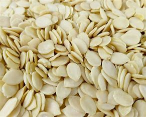

Egusi, also spelled egushi (Yoruba: Ẹ̀gúṣí), are the protein-rich seeds of certain cucurbitaceous plants (squash, melon, gourd), which, after being dried and ground, are used as a major ingredient in West African cuisine. Egusi is a Yoruba word, and the popular method of cooking it is deeply rooted in Yoruba culinary traditions. Egusi melon seeds are large and white in appearance; sometimes they look brownish or off-white in color but the main egusi color is primarily white. Scholars disagree whether the word is used more properly for the seeds of the colocynth, those of a particular large-seeded variety of the watermelon, or generically for those of any cucurbitaceous plant. Egusi seeds are in a class of their own and should never be mistaken for pumpkin or watermelon seeds. In particular the name "egusi" may refer to either or both plants (or more generically to other cucurbits) in their capacity as seed crops, or to a soup made from these seeds and popular in West Africa. The characteristics and uses of all these seeds are broadly similar. Major egusi-growing nations include Nigeria, Burkina Faso, Togo, Ghana, Côte d'Ivoire, Benin, Mali, and Cameroon. Species from which egusi is derived include Melothria sphaerocarpa (syn. Cucumeropsis mannii) and Citrullus lanatus.
Egusi seeds are used in making egusi soup; the soup is thickened with the seeds. Melothria sphaerocarpa, which egusi seeds are from, grows throughout central to western Africa and is used by different ethnic groups in these regions to prepare the soup, and the origins of the soup are deeply rooted in the Yoruba culinary Egusi soup is a very popular soup in West Africa, with considerable local variations. Besides the seeds, water, and oil, egusi soup typically contains leafy greens, other vegetables, seasonings, and meat. Leafy greens typically used for egusi soup include Efo Tete, scentleaf, okazi/afang (wild spinach), bitterleaf (onugbu), pumpkin leaf (ugu), uziza leaf, celosia and spinach. Other commonly used vegetables include tomatoes, okra and bell peppers. Typical seasonings include chili peppers, onions, salt and locust beans. Also commonly used ingredients are beef, goat, chicken, fish, periwinkle, shrimp or crayfish as sources of protein. In Nigeria, egusi is common throughout the country, and the seeds are used in making stews and soups. The Igbo refer to it as "egwusi," a borrowed term from the original Yoruba word "egusi." In Ghana, egusi is also called akatoa, egushi or agushi, and is used for soup and stew, most popularly in palaver sauce. In the late 1980s, the Government of Canada funded a project intended to develop a machine to help Cameroonians shell egusi seeds. A machine has also been developed in Nigeria to shell egusi.